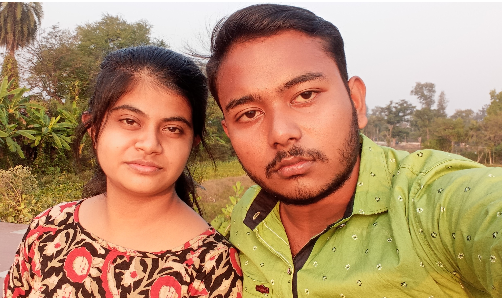

About Us

We spent 4 years together. We have a healthy relationship. Our marriage will be held on after 1 year
Healthy relationships involve honesty, trust, respect and open communication between partners and they take effort and compromise from both people.
Name: Nilimesh Halder & Arunima Mondal
Address: Harindanga, Falta, South 24 Parganas
Email: nilimeshhalder2001@gmail.com
Phone: 8001400857
Website: www.facebook.com
Love Story
INTRODUCTION
-
What is the real meaning of love?
Such a person can be a friend, parent, sibling, or even our pet. Such love is based on a feeling of attraction or affection.
-
The history of love -
Like most things around the world, love has also transformed over the years and centuries. Love was not always.
-
What does real love feel like?
Love is a holistic feeling. It involves many elements, words, and actions which define love. What love means to your depends
-
Care -
If we love someone, we care about them, their feelings, and their well-being. We may go out of our way to ensure they are okay
RELATIONSHIP
-
What is the real meaning of love?
Such a person can be a friend, parent, sibling, or even our pet. Such love is based on a feeling of attraction or affection.
-
The history of love -
Like most things around the world, love has also transformed over the years and centuries. Love was not always.
-
What does real love feel like?
Love is a holistic feeling. It involves many elements, words, and actions which define love. What love means to your depends
-
Care -
If we love someone, we care about them, their feelings, and their well-being. We may go out of our way to ensure they are okay